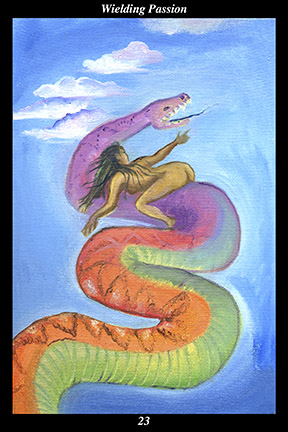

 | IMAGEA naked female warrior rides a great serpent across the sky. Even as she points to the open sky where there are no clouds, the serpent carries her there.
|
INTERPRETATION
This hexagram depicts the creative power of the passions. The serpent symbolizes the driving force of the instincts and desires. The female warrior symbolizes the feminine creative force, who conceives in order to nurture and sustain what is valuable. Being naked means that nothing stands between you and the world. The clouds symbolize the obscuring of the sun’s light and the concealing of clarity, beauty, and joy. Riding the serpent into the open sky means that you liberate your inner nature in order to experience first-hand the bliss of being fully alive. Taken together, these symbols mean that you dare to incorporate the full spectrum of human experience into a rich and rewarding lifetime.
ACTION
The feminine half of the spirit warrior channels passion into constructive acts of
benefit. Those who encourage and inspire others must themselves find encouragement and inspiration: when we deny ourselves the pleasure, excitement, and enthusiasm engendered by new and intoxicating experiences, we find the well of creativity, generosity, and loving-kindness drying up, making it increasingly difficult to contribute to others’ lives in a meaningful way. Because it is so easy to make mistakes when freeing the passions, much of our upbringing stresses the control and suppression of these powerful inner forces. Likewise, because it is so easy to be manipulated by those appealing to our passions, we learn to distrust and discount these life-affirming forces. When the feminine half of the spirit warrior encounters inner stagnation and apathy, it is because the source of personal fulfillment has been dammed up too long: this is a time for re-entering the sense of adventure that comes with an awareness of just how precious each fleeting moment truly is. Living with passion without being ruled by it, you avoid self-indulgence and self-centeredness by finding constructive outlets for the spirited energy you awaken. Because the passions are inherently life-affirming, they are by their very nature creative. For this reason, they do not need to be directed or controlled in order to be constructive—rather, they find expression through us when we remain constant in our commitment to marshal all our inner resources toward preserving and protecting that which is most valuable.
INTENT
When a bonfire is kindled, it produces heat. Similarly, when the passions are aroused, they produce energy. When the heat of a fire is applied constructively, it can cook food or fire pottery or convert water to steam. Similarly, when the energy of the passions is applied constructively, it can create art or overcome oppression or convert weakness into strength. When fire is not tended properly, it either burns too hot or dies out. Similarly, when the passions are not attended to properly, they either result in compulsiveness or numbness. For this reason, it is essential to achieve a balance between a sense of purposefulness and a sense of playfulness: just as too much seriousness and not enough playfulness is like having responsibility without freedom, too much playfulness without enough seriousness is like having freedom without responsibility. Balancing your responsibility to truly nourish others with your freedom to be truly nourished, you convert your passions into good works and they convert you into joy.
SUMMARY
Tame the masculine creative force with loving-kindness, animate the feminine creative force with freedom. Unite their forces within yourself and each of your works will be like a force of nature. Channel your passions into constructive and beneficial acts instead of trying to control or suppress them. Dare to explore new horizons and develop new avenues for self-expression.
THE LINE CHANGES
1° Roles and relationships can be entered into with such sincerity and integrity that fulfilling them may become the be-all and end-all of daily life, trapping us in a an identity that represses our true nature. Break free of every mold without harming others. Keep the child’s excitement for life ever alive.
2° Customs and values change, not just over the course of centuries but even within our lifetime. Do not allow yourself to be domesticated and then regret your timidity late in life. Find others who are light-hearted and creative—this is the path of the ecstatic life.
3° The window of opportunity closes—there will not be another warning. When people exaggerate their strength, overestimate their cunning, and underestimate their opposition, they cannot succeed. The wrong passions at the wrong time expressed in the wrong way lead to disaster.
4° When your personal ethics differ from those of your peers, make sure they are based on firsthand knowledge and not on principles or ideals. Only then give voice to your growing concerns. Though this will bring you conflict, it will also draw superior allies—do not adopt others’ timidity.
5° The outsiders who misunderstand your endeavor continue to successfully obstruct your progress. Even those close to you begin supporting some of their ideas. After some initial anger, you listen more receptively—though divisions remain, you see your own one-sidedness helped spur theirs.
6° You have an epiphany—those you thought were trying to harm you were merely trying to get you back to the table. They need your strength and resources just as you need their support and cooperation. You must make the first move toward reconciliation and normalization.